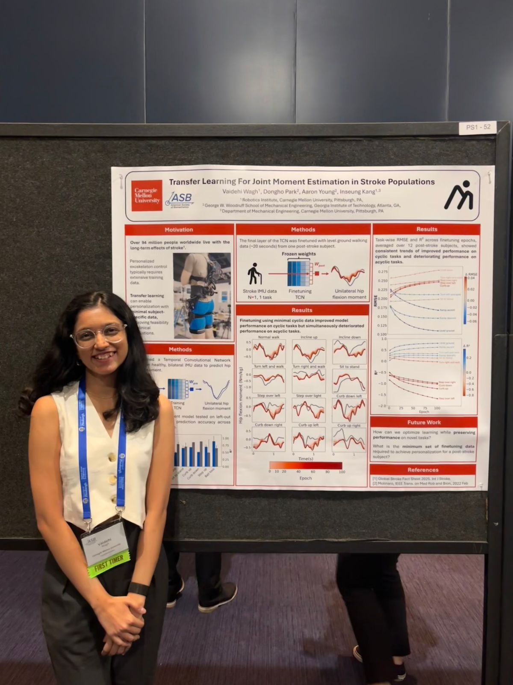
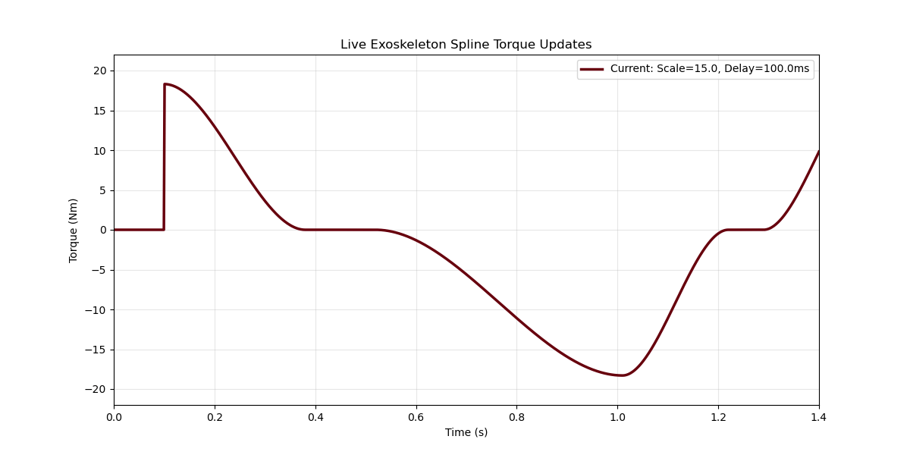
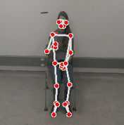
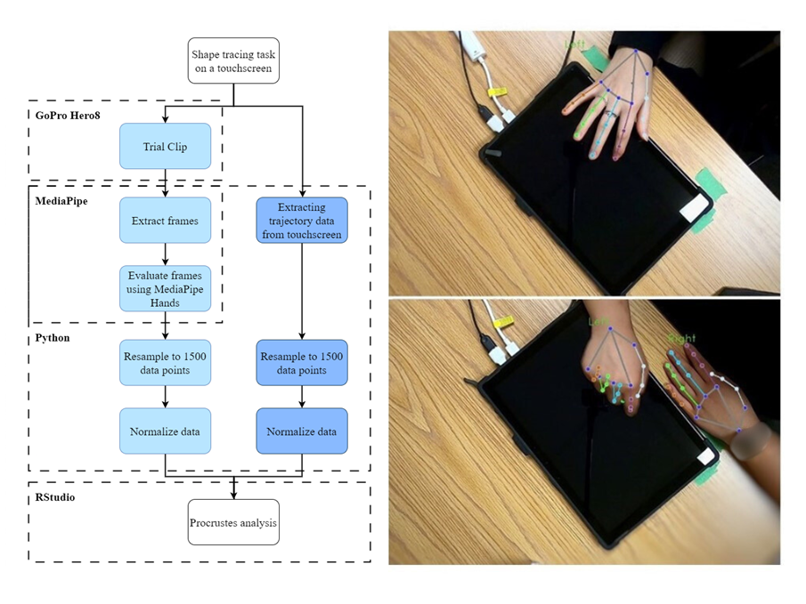

- GRA at MetaMobility Lab
- Advised by Dr. Inseung Kang
- CV
- GitHub
- Google Scholar
- vwagh[at]cs[dot]cmu[dot]edu
- pronunciation: VY-day-hee
My thesis work at CMU focuses on wearable hip exoskeletons that close the loop between what a person says, what they see through smart glasses, and how assistance is delivered: vision-language models and speech interfaces run at interaction timescales on edge hardware, paired with learning methods that cope with ambiguous preferences and little per-user data. I also work on temporal models for joint-level torque estimation from aligned IMU and simulation data, including transfer to data-scarce populations. Previously, I was a research intern at UBC and completed my Bachelor’s in Mechanical Engineering at College of Engineering, Pune, India.
I am actively seeking full-time opportunities in ML, AI, & Robotics research starting June 2026.
Research

Human-in-the-loop control that maps egocentric video and transcribed speech to assistive parameters in real time, with deployment-minded inference and learning when user intent is noisy and labeled data is scarce.

Can off-the-shelf vision tools can replace subjective stroke recovery metrics?
Publications
{kind=link}

Projects

Speech + vision interface for long-horizon planning in personalized exoskeleton control.

Designed linear actuation mechanisms with vision-based vein localization.

Human locomotion imitation using GAN-based reward models.

Stabilizing a human model on a dynamically moving platform.